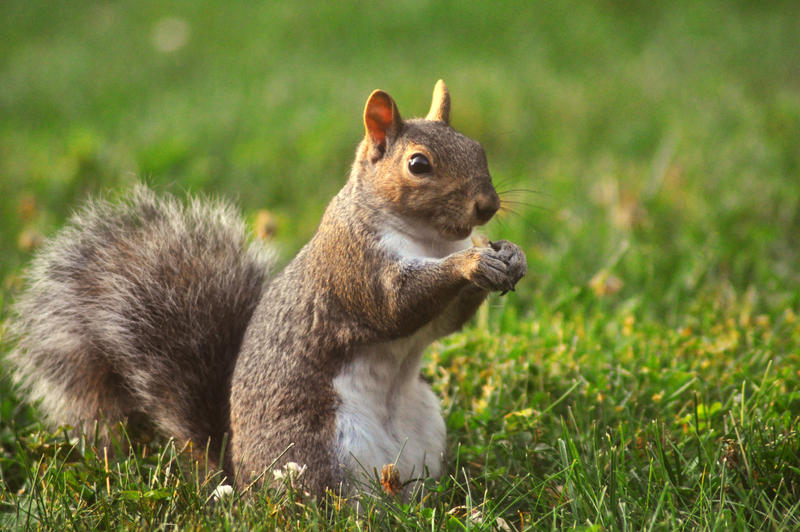

กระรอก เป็นสัตว์เลี้ยงลูกด้วยนมในตระกูลสัตว์ฟันแทะ (Rodent) มีขนาดตัวเล็กถึงปานกลาง รูปร่างเพรียว และมีหางเป็นพวงฟูสวยงาม มีนิสัยคล่องแคล่ว ว่องไว และมักพบเห็นได้ตามต้นไม้ในสวนสาธารณะหรือป่า เป็นสัตว์ที่ขึ้นชื่อเรื่องความซุกซนและการสะสมอาหารไว้ตามที่ต่างๆ